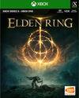
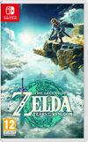

Bienvenido a la sección de Juegos
En esta sección encontrarás información y recomendaciones
sobre videojuegos destacados. Los videojuegos son una forma
de entretenimiento interactivo que combina narrativa, gráficos,
música y desafíos para ofrecer experiencias únicas a los jugadores.
Explora diferentes géneros, conoce títulos populares y descubre cómo
los videojuegos pueden ser tanto una fuente de diversión como de
aprendizaje.

Elder Ring
por: FromSoftwarHidetaka Miyazaki
Elden Ring es un videojuego de rol de acción publicado por Bandai Namco Entertainment.
Ambientado en un vasto mundo abierto conocido como las Tierras Intermedias,
el juego combina exploración, combate desafiante y una narrativa profunda creada
en colaboración con el escritor George R. R. Martin. Los jugadores asumen el papel
de un Sinluz en busca del Círculo de Elden, enfrentándose a enemigos formidables y
descubriendo secretos en un entorno lleno de misterio y peligro.
Página oficial
Persona 5
por: Atlus
La historia sigue a un grupo de estudiantes de secundaria que forman
el grupo Phantom Thieves of Hearts para cambiar los corazones de las personas
corruptas en Tokio. Con una jugabilidad que combina la exploración de mazmorras,
la gestión del tiempo y la interacción social, Persona 5 ofrece una experiencia
rica en narrativa y desarrollo de personajes, destacándose por su estilo visual único
y su banda sonora cautivadora.
Página oficial
Red Dead Redemption 2
por: Rockstar Games
Red Dead Redemption 2 es un videojuego de acción y aventura en mundo abierto
desarrollado por Rockstar Games. Ambientado en el ocaso de la era del Viejo Oeste,
el juego sigue la historia de Arthur Morgan, un forajido miembro de la banda Van der Linde.
Con una narrativa rica y personajes memorables, los jugadores exploran un vasto mundo lleno
de vida, enfrentándose a desafíos morales y decisiones que afectan el desarrollo de la
historia.
Página oficial

The Legend of Zelda: Tears of the Kingdom
por: Nintendo
The Legend of Zelda: Tears of the Kingdom es un videojuego de acción y aventura
desarrollado por Nintendo. Continuando la historia de Breath of the Wild, el juego
sigue a Link mientras explora un vasto mundo lleno de misterios, enemigos y acertijos.
Con una jugabilidad innovadora, gráficos impresionantes y una narrativa cautivadora,
Tears of the Kingdom ofrece a los jugadores una experiencia épica en el universo de Zelda.
Pagina oficial